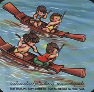

Festivals
- Horsemanship
- Htamaneipwe
- Sand Pagodas
- Thingyan
- Kason Nyaungyaltwinpwe
- Sar Pyan Pwe
- Wa So Pwe
- Sar Yale Tan Mal Pwe
- Hlay Pyaing pwe
- Mee Tun Pwe
- Ka Htain Pwe
- Sarsodaw
Months
- January
- February
- March
- April
- May
- June
- July
- August
- September
- October
- November
- December
|
Tawthalin (September)

Tawthalin is the sixth month on Myanmar calendar. (August-September). It is a hot month, hot enough to kill small prawns.
The surfaces of water are like mats, free of waves. So it has been a tradition to hold regatta festivals since the times of ancient Myanmar kings.
It was graced by the king himself aboard golden pyigyimon Barge, adorned by figures of fifty kings on each side, as a symbol of a hundred kings owing allegiance to the monarch.
It was not just pageantry but an occasion for demonstrating the naval prowess of the Tatmadaw of ancient Myanmar kings.
The tradition was nearly dying out until the government revived it with traditional regatta festival held on kindawgyi Lake.
|